企业人力资源管理常见困惑：
- 深陷HR琐碎事务，很难抽身着手HR管理创新和提升方面的工作；
- 通常认为HR管理是HR部门的事，致使HR工作饱受员工和业务部门诟病；
- 引进了诸如BSC等先进管理思想或方法，执行起来却困难重重，最后无疾而终；
- 无法即时、准确、全面的掌握企业人力资源状况，难以担当企业管理层的战略决策顾问角色。
人力资源管理者必须知道的四大趋势：
- 人力资源管理只有服务于公司战略、服务于业务、服务于员工职业发展，才能体现价值，才能真正得到认同；
- 搭建完整、统一的人力资源管理信息平台，通过精细化管理，实现基础数据一体化，业务流程规范化，内部控制实时化，才能提升HR工作效率，改善HR服务品质；
- 传统部门级人力资源管理模式正在向全员参与的企业级战略人力资源管理模式转变：每一位业务经理，都能主动关注并强化自己的“人才库”；每一个员工都能感受现代人力资源管理带来的便捷服务；
- 以专业的人力资源管理技术，依托动态详实的数据，为管理层及时提供多角度、多条件的人力资源统计分析报告，才能体现人力资源管理价值，真正成为战略决策的伙伴。
方案概述
金蝶战略人力资源管理解决方案，是为期望推行战略人力资源管理的企业而设计的。这些企业会围绕企业战略构建人力资源管理体系。注重以能力为核心进行人才选拔评估、培训开展；注重过程甚于结果的绩效管理；注重岗位价值、市场水平和业绩结合的薪酬激励管理；注重带动员工、直线经理、高管层共同参与的协同人力资源管理；注重通过专业化、精细化、前瞻性的人力资源管理，帮助企业提升组织能力，推动企业战略的实施。
本方案适用于制造业，零售、餐饮、酒店、物流等服务企业，以及金融、地产、高科技企业。

方案特色
特色１：先进的战略人力资源管理理论
所谓战略人力资源管理，是指将支持企业战略实现的组织能力贯穿到人力资源管理中，建立基于战略发展的有计划的人力资源管理模式，确保组织与公司的战略方向协调一致，并通过改善员工治理，提升员工能力，牵引员工思维来构建企业高效的组织能力，支持企业战略目标的实现。通俗地说，就是帮助企业快速、高效走到预期的目的地。
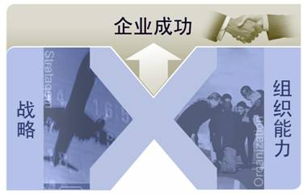
特色２：支撑全面的人力资源管理体系
基于企业战略目标，以职位能力素质模型为核心，通过构建任职资格体系、招聘选拔体系、培训发展体系、绩效管理体系、薪酬激励体系，形成系统关联的人力资源管理体系，保障组织能力能有效承载企业的战略执行。
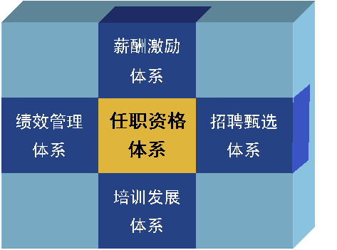
特色３：推动战略实施的组织绩效管理
以推动战略实施为目标，通过战略宣导，培养绩效文化；制订绩效方案，明确绩效规则；分解绩效目标，层层落实到人；监控绩效过程，实时执行纠偏；有据可依进行绩效评估；依据绩效结果实施员工激励等全过程绩效管理，构建以过程管理为主的企业绩效管理体系。
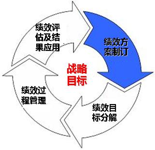
特色４：全员参与的现代人力资源管理
将颠覆传统的部门级人力资源管理模式，向全员参与的企业级战略人力资源管理模式转变，企业管理层、业务经理、普通员工与人力资源管理者一起，都能参与到企业人力资源管理中来，通过工作协同，共同促进企业人力资源的提升。
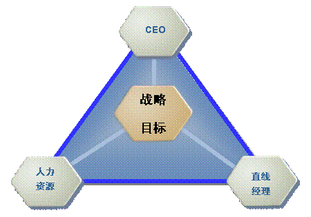
应用价值
金蝶战略人力资源管理解决方案通过人事管理、能力素质模型、绩效管理、薪酬管理、考勤管理、招聘选拔、培训发展和查询报表等系统一体化整合应用，以及工作流引擎、自助平台和移动HR平台的协同管理，在实现人力资源专业、精细、高效管理的同时，还能将企业的人力资源管理任务和分析报告即时提供给业务经理和企业管理层，充分响应公司战略和业务发展。
- 通过组织规划系统和职员管理系统，将企业的组织架构、职务、职位等相关信息与职员的详细信息进行整合，为绩效管理、薪酬管理等相关业务提供基础数据；
- 通过能力素质模型系统定义企业的素质指标库，将素质指标库中的指标与职位的核心素质要求进行匹配，结合职员的实际能力素质，提供人、职素质符合度差异报告，使企业在开展人事、招聘、培训、绩效等业务时得以全方位应用；
- 通过招聘选拔和培训发展系统，帮助企业实现从人力资源规划到招聘需求征集、计划制订、执行、总结等完整的招聘选拔业务流程，以及从培训需求征集到培训规划制订、执行、考核和总结等完整的培训业务流程，从而帮助企业达到规范化管理的目的；
- 通过绩效管理系统完成绩效方案制订与下达、绩效过程管理、绩效考核、绩效总结等完整的绩效管理流程。同时系统可实现平衡计分卡、KPI、360度评估等多种绩效评估方式，实现对组织与员工的绩效目标管理和过程管理；
- 通过薪酬设计系统、薪酬核算系统以及社保福利系统，可以帮助企业实现从薪酬体系构建、定薪调薪管理、薪酬核算到薪酬发放业务处理的全过程薪酬管理；
- 通过考勤管理系统帮助企业应对复杂而多变的员工工作计划、人力成本控制、实时假期额度控制、请假处理、异地原始考勤数据实时集中运算等业务需求，提高系统的整体使用效率；
- 通过报表平台，使人力资源部门能够随时提供面向决策层的定期报告、面向内部评估的非定期报告、满足预警监控的非标准报告、日常管理用途的基础性报告以及决策分析的综合性报告；
- 通过员工工作台、经理人平台、CEO平台的协同应用，企业可实现从决策层到操作层的HR业务处理、沟通和监控，充分落实全员参与的战略人力资源管理思想。
核心应用
一，企业组织架构管理
系统提供构建和维护多层级树形关系的企业组织架构功能，可根据需要灵活调整组织架构，自动生成组织架构图，通过组织架构图链接查询各级组织单元、职位、任职人员的详细数据。帮助企业实现组织架构管理和组织规划落实。
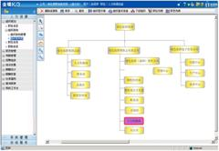
二，建立职位能力素质模型
系统支持从素质词典中选择相应素质指标分配到职位，建立职位的能力素质模型，并将其应用到职位说明书的能力素质要求中，为职位招聘、任职者能力素质评估提供依据。
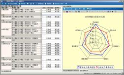
三，员工全任职周期管理
系统提供员工人事信息维护功能，在可引用国家人事档案信息标准基础上，还可自定义新业务类别的职员档案资料表和字段，适应不同类型企业对员工资料的记录要求，保证向其它HR业务模块灵活提供规范的基础数据。另外系统还提供对招聘、配置、培训、考核、激励等所有人力资源业务信息的记录，实现对员工在企业全任职周期信息的管理
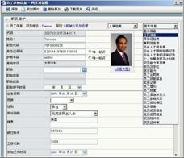
四，精细化考勤管理
支持企业工厂日历、考勤排班、假期额度控制及管理、加班管理、调班管理、出差管理、补签卡、考勤异常调整、考勤计算、考勤汇总等业务。可与考勤硬件设备连接，支持异地原始考勤数据实时集中运算等业务需求。
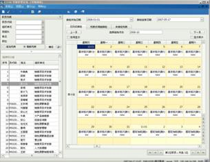
五，支持多核算方式的薪资管理
系统提供薪酬设计和薪资核算功能，支持将企业薪酬标准落实到系统中，参照薪酬标准可进行职员定薪调薪。公式平台可引用职员信息、工资项目、常量、函数等元素，按不同的计算规则设置薪资计算公式，实现薪资自动计算。系统支持定额工资、计时计件工资、绩效工资等多种薪酬核算方式，实现不同公司不同类别员工复杂多变的薪酬计算方法。
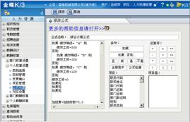
六，注重过程的绩效管理
系统支持绩效目标分解及下达管理，支持目标管理、平衡计分卡、360度评估等多种绩效评估模式，以及工作流方式进行绩效评估。尤其注重绩效过程管理，通过执行计划监控、过程总结反馈、上级沟通指导、关键事件记录等方式，在过程中确保不打折扣的执行，有效推动绩效目标的达成。
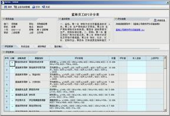
七，招聘选拔
系统以职位任职要求为标准，对应聘者进行符合度评估。招聘过程实现从人力资源规划、招聘需求征集、招聘计划、信息发布、简历筛选、面试、录用、入职的一体化流程管理。系统可与外部人才招聘网站对接，直接引入应聘者简历。系统可以对普通应聘者和高级人才分别进行面试录用管理。通过规范招聘选拔管理，协同招聘主管和用人部门顺利进行招聘面试工作，帮助企业选拔到合适人才。
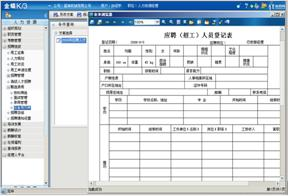
八，培训发展
系统能够承载企业基于职位任职要求构建的培训体系。支持培训需求征集、制订培训规划、管理培训活动、生成员工培训记录、进行在线培训考试、在线培训效果调查、培训总结统计等业务处理。能够根据任职资格要求安排任职者参加各种培训课程，员工亦可查看和申请适合的课程，或进行自助培训。基于任职要求构建的培训体系，通过规范培训管理，加强培训针对性，帮助员工实现能力提升。
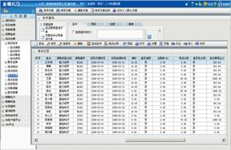
九，全面灵活的报表统计
系统提供人事、考勤、薪酬、招聘、培训、绩效等业务的标准报表，以及自定义报表、OLAP报表（支持水晶报表展现）等工具，HR部门可以随时监控人力资源状况，并为管理层提供人力资源决策参考完整。
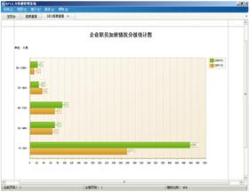
十，员工自助服务平台
系统提供CEO平台、经理人平台、员工工作台，让企业管理层、直线经理、普通员工都能参与人力资源管理，处理与本职工作相关的人力资源业务，与人力资源专业人员一起，构建全员参与的人力资源协同管理模式，促进企业组织能力的提升。
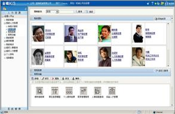
成功客户
制造业
- 江苏江淮动力
- 三菱电机大连机器有限公司
- 日本电产（大连）公司
- 株洲电力机车有限公司
- 成都飞机设计院
- 江南造船厂
- 陕西汉江机床有限公司
- 利优比（大连）机器有限公司
- 彩虹集团电子股份有限公司
- 夏普电子（上海）有限公司
- NEC东京电子（厦门）
- 斯凯菲尔电子（苏州）
- 健伍电子贸易（上海）有限公司
- 珠海方正科技多层线路板
- 珠海紫翔电子科技有限公司
- 深圳托普国威电子有限公司
- TCL电脑科技（深圳）
- 泰德富源科技（深圳）
- 索贝数码科技股份有限公司
- 汕头超声印制板公司
- 四川九洲电器集团
- 福建锦兴集团有限公司
- 普莱克斯（中国）投资
- 江苏龙蟠石化有限公司
- 中昊（集团）晨光化工研究院
- 利尔化学有限公司
- 罗莱家纺有限公司
- 陆逊梯卡华宏（东莞）眼镜
- 美克美家家具连锁有限公司
- 厦门银鹭集团
- 江中集团
- 重庆希尔安药业有限公司
- 中国医药集团总公司
- 南京汽车集团
- 四川一汽丰田汽车有限公司
- 中铝瑞闽铝板带有限公司
- 重庆渝能矿业集团有限公司
- 安徽马钢和菱实业有限公司
- 中条山有色金属集团
- 广东欧普照明有限公司
- 深圳市比克电池有限公司
- 珠海许继电气有限公司
- 重庆川仪总厂有限公司
- 富士施乐高科技（深圳）
服务业
- 麦当劳（中国）有限公司
- 海底捞餐饮有限责任公司
- 金钱豹（中国）餐饮集团
- 汉堡王（上海）餐饮有限公司
- 上海花园饭店
- 芒果网
- 港中旅（珠海）海洋温泉有限公司
- 广东省航运集团有限公司
- 联邦快递（中国）有限公司
- 天津大田集团有限公司
- 青岛马士基集装箱工业有限公司
- 厦门国际货柜码头有限公司
- 深圳天虹商场有限公司
- 宜家家居
- 重庆诚泰通信连锁有限公司
- 东莞市大新商贸有限公司
- 深圳市友谊投资有限公司
- 黑龙江远大购物中心有限公司
- 深圳华润万象城
- 重庆重客隆超市连锁有限责任公司
- 成都仁和实业（集团）有限公司
- 深圳海王星辰医药有限公司
其他
- 中国银行深圳分行
- 重庆银行
- 中原（中国）物业顾问有限公司
- 青岛银盛泰房地产有限公司
- 徐州华润电力有限公司
- 山西兰花科技创业股份有限公司
- 天年生物（中国）有限公司
- 中港疏浚股份有限公司
- 普天东方通信集团有限公司
- 大连高新技术园区管委会
- 重庆中法供水有限公司
- 重庆联合产权交易所
- 博爱医疗集团
- 央视-索福瑞媒介研究有限公司
- 中国民航深圳空中交通管理站
- 重庆东银实业（集团）有限公司
- 深圳中航集团
所获荣誉
2008年中国企业信息化500强
最佳人力资源解决方案提供商奖
－－CECA国家信息化测评中心
2008年中国计算机用户协会25周年
人力资源管理软件 首选品牌
－－中国计算机用户协会
2007、2006、2005、2004年度
HR软件用户满意度综合第一
－－计世资讯、中国质量协会用户委员会